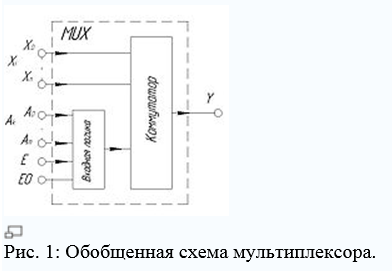
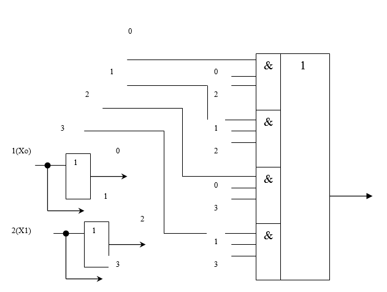
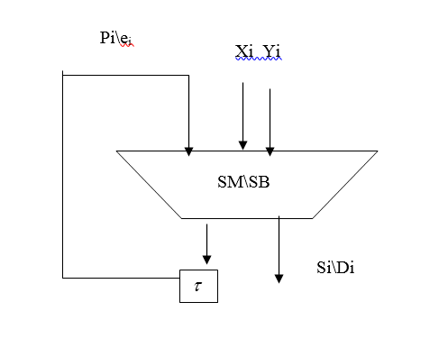
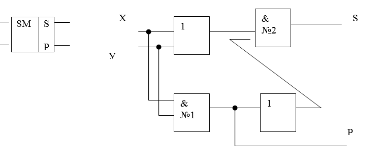
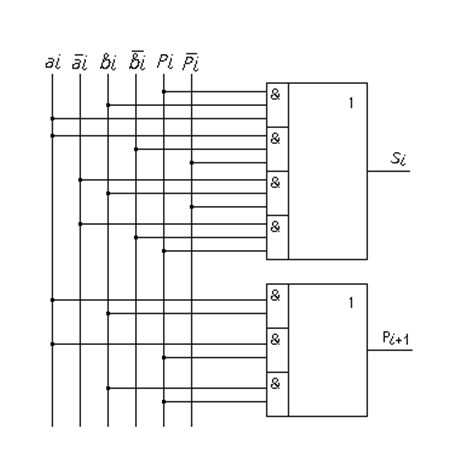
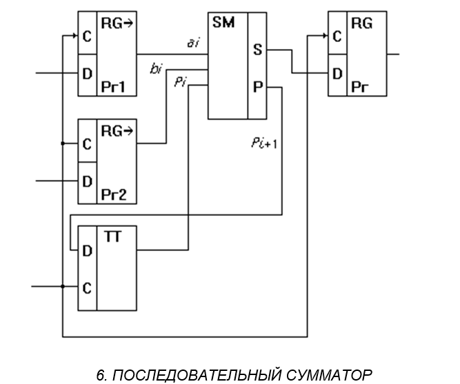
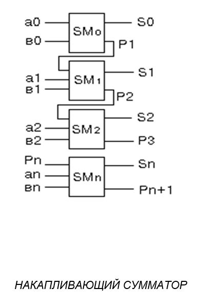
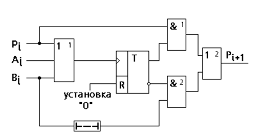

Мультиплексоры, сумматоры
Цель: изучение использование Мультиплексоров, сумматоров в современной ЭВМ.
План:
1. Общее мультиплексорах, сумматорах и их назначение
2. Мультиплексор на логических схемах
3. Сумматоры и вычитатели
Мультиплексоры
Мультиплексором – называется, функциональны узел, обеспечивающий передачу информации, поступающую по нескольким входным линиям связи, на одну выходную линию.
Мультиплексоры представляют собой коммутационную схему, передающую под управлением адресного управляющего слова одну из 2m входных информационных линий на одну общую выходную линию. В определенный момент времени в выходу может быть подключена только одна входная линия, указываемая адресным словом. Мультиплексоры в интегральном исполнении обычно малоразрядные. Их адресное управляющее слово – двоичное. Для удобства работы двоичный код адресного слова соответствует номеру подключаемой на выход линии. Если мультиплексор многоразрядный, то он снабжается одним общим адресным словом. Такой мультиплексор удобен для коммутации многоразрядных слов, передаваемых по нескольким параллельным разрядным линиям связи.
Формально мультиплексор состоит из:
-дешифратора адресного слова
- многовходовой схемы 2И-nИЛИ-НЕ. (где n- число входов)

Mультиплексор — устройство, имеющее несколько сигнальных входов, один или более управляющих входов и один выход. Мультиплексор позволяет передать сигнал с одного из входов на выход; при этом выбор желаемого входа осуществляется подачей соответствующей комбинации управляющих сигналов.
Аналоговые и цифровые мультиплексоры значительно различаются по принципу работы. Первые электрически соединяют выбранный вход с выходом (при этом сопротивление между ними невелико — порядка единиц/десятков ом). Вторые же не образуют прямого электрического соединения между выбранным входом и выходом, а лишь «копируют» на выход логический уровень ('0' или '1') с выбранного входа. Мультиплексоры сокращённо обозначаются как MUX (от англ. multiplexer), а также MS (от англ. multiplexer selector).
Обобщенная схема мультиплексора

Обобщенная схема мультиплексора приведена на рис. 1. Мультиплексор MUX в общем случае можно представить в виде коммутатора, управляемого входной логической схемой. В качестве этой схемы обычно используется дешифратор. Входные логические сигналы Xi поступают на входы коммутатора и через коммутатор передаются на выход Y. Управление коммутатором осуществляется входной логической схемой. В цифровых мультиплексорах логические элементы коммутатора и дешифратора обычно объединяются. На вход логической схемы подаются адресные сигналы Ak (от англ. Address). Мультиплексоры могут иметь дополнительный управляющий вход E (от англ. Enable), который может разрешать или запрещать прохождение входного сигнала на выход Y. Кроме этого, некоторые мультиплексоры могут иметь выход с тремя состояниями: два логических состояния 0 и 1, и третье состояние — отключённый выход (выходное сопротивление равно бесконечности). Перевод мультиплексора в третье состояние производится снятием управляющего сигнала OE (от англ. Output Enable).

Селективные свойства мультиплексоров создают возможность организации на их основе сетей передачи информации m x n где: m- количество источников одновременно подключаемых к n получателям.
В качестве адресных слов в сетях служат адреса (номера) входных регистров получателей куда следует передавать информацию. Дополнительно сеть содержит блок приоритетного обслуживания запросов на передачу информации, необходимой для предотвращения одновременного подключения нескольких источников к одному получателю. Этот же блок организует последовательное обслуживание нескольких запросов к одному получателю по раннее установленному приоритету.
Мультиплексор может служить базисом для построения функциональных узлов любой сложности, содержащихся, в частности и коммутационные связи. Чем больше число входов у базисных мультиплексоров, тем короче цепочка последовательных связей и тем меньше будет временная задержка определения функций.
Сумматоры и вычитатели
Сумматорами называют узлы, которые выполняют сложение двоичных чисел в различных кодах.
Как сумматоры, так и вычитатели предназначены для выполнения основных арифметических операций – сложения и вычитания. Имея на входе дополнительные средства для изменения знака второго аргумента, сумматор может прибавлять к первому слагаемому второе с измененным знаком, т.е. вычитать, а вычитатель – вычитать из уменьшаемого вычитаемое с измененным знаком, т.е. прибавлять. Таким образом в арифметическо - логических устройствах (АЛУ) в большинстве случаев используется только один из двух рассматриваемых узлов. Традиционно это сумматор, хотя по всем показателям вычитатель не уступает сумматору.
Сумматоры подразделяются на:
- параллельные
- последовательные
- одноразрядные
- многоразрядные
- комбинационные
- накапливающие
- двоичные
- двоично-десятичные
Операции сложения и вычитания бывают последовательные и параллельные.
См.рис

Последовательное сложение / вычитание многотактное, требует сложной общей организации динамического хранения аргументов и результата, поэтому в арифметическо - логических устройствах подобная организация практически не применяется.
Одноразрядный сумматор суммирует только один разряд двоичных чисел. При сложении двух цифр может возникнуть перенос в старший разряд. В результате в следующем разряде появиться необходимость суммировать три цифры 2 цифры данного разряда и одну цифру переноса из старшего разряда. Поэтому одноразрядные сумматоры могут иметь два полусумматора и сумматор входа.
По способу организации процесса суммирования и принципа построения различают сумматоры комбинационные и накапливающие.
СУММАТОР
В сумматоре комбинационного типа значение суммы и переноса образуется при одновременном поступлении слагаемых. Функциональная схема сумматора данного типа создается на основных логических элементах «И» , «ИЛИ», «НЕ».
В сумматоре накапливающего типа слагаемые поступают одно за другим с интервалом равным, периоду повторения тактовых импульсов.
Особенностью комбинационных сумматоров является то что они выполнены на логических схемах, не обладают свойствами накапливания суммы, все комбинационные сумматоры последовательного действия и позволяют складывать числа без учета переноса.


Сумматор может быть построен как комбинационная схема - последовательный сумматор и как последовательная схема - накапливающий сумматор. Сумматор осуществляет суммирование цифр разрядов слагаемых и цифр переноса по правилам сложения по модулю 2. Работа сумматора строго регламентирована в соответствии с таблицей:
| ai | bi | Pi | Si | Pi+1 |
| 0 | 0 | 0 | 0 | 0 |
| 0 | 0 | 1 | 1 | 0 |
| 0 | 1 | 0 | 1 | 0 |
| 0 | 1 | 1 | 0 | 1 |
| 1 | 0 | 0 | 1 | 0 |
| 1 | 0 | 1 | 0 | 1 |
| 1 | 1 | 0 | 0 | 1 |
| 1 | 1 | 1 | 1 | 1 |
При параллельных сложениях и вычитаниях используется n-одноразрядных сумматоров/ вычитателей (по числу разрядов) взаимодействующих между собой по цепям переносов\займов.
В зависимости от разрядности суммирующихся чисел они подразделяются на одно и многоразрядные.
В параллельном сумматоре все разряды операндов суммируются одновременно, но быстродействие снижается за счет времени передачи цифры переноса из младшего разряда.

Под последовательностью понимается поочередное (заряд за зарядом) сложение или вычитание на одноразрядной схеме с задержкой переносов \займов для использования их как третьих аргументов в следующем такте, т.е. разряде.
Последовательный сумматор осуществляет суммирование слагаемых и цифр переноса поразрядно, начиная с младшего разряда. Основой его схемы является одноразрядный сумматор. Суммирование производится в одноразрядном сумматоре SM. Цифры i-того разряда слагаемого и цифра переноса из младшего разряда передаются на вход сумматора одновременно с приходом тактового импульса. Регистры 1 и 2 используются для приема и хранения цифр i-того разряда слагаемых. В D - триггере хранится цифра переноса из младшего разряда. Регистр 3 принимает и хранит цифру i-того суммы. С приходом тактового импульса из регистров 1, 2 и D - триггера разряда слагаемых и цифра переноса поступает на вход одноразрядного сумматора. Одновременно регистр 3 освобождается для приема цифры суммы.

Накапливающий сумматор является автоматом с памятью, т.е. слагаемые могут приходить поочередно в произвольные моменты времени и запоминаться в линиях задержки или в триггерах. Накапливающий. сумматор применяется в асинхронных устройствах, в которых слагаемые не привязаны к тактам тактового генератора.

С приходом слагаемого аi=1 элемент "ИЛИ" устанавливается в "1", триггер устанавливается. в "1". Если bi=1 и приходит через какое-то время после ai, то оно запоминается в линии задержки и одновременно bi опрокидывает триггер в "0". На инверсном выходе триггера устанавливается "1", следовательно на вторую схему "И" подаются две единицы, следовательно на выходе второй схемы "ИЛИ" формируется цифра переноса в старший разряд, равная "1". Если Pi=0, то цифра суммы, которая снимается с прямого выхода триггера, равна "0". Если Pi=1, то сумма Si=1.
| ai | bi | Pi | Si | Pi+1 |
| 0 | 0 | 0 | 0 | 0 |
| 0 | 0 | 1 | 1 | 0 |
| 0 | 1 | 0 | 1 | 0 |
| 0 | 1 | 1 | 0 | 1 |
| 1 | 0 | 0 | 1 | 0 |
| 1 | 0 | 1 | 0 | 1 |
| 1 | 1 | 0 | 0 | 1 |
| 1 | 1 | 1 | 1 | 1 |